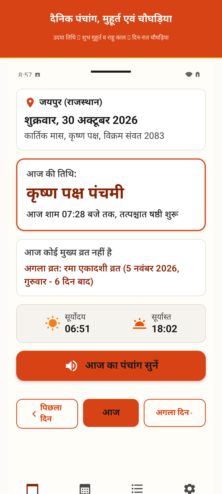

Vedic Wisdom, Pure Clarity. A Panchang Made for Peace of Mind.
दैनिक पंचांग — सटीक गणना, वरिष्ठों के अनुकूल और पूर्णतः विज्ञापन-मुक्त।
Experience traditional Hindu timekeeping with astronomical precision. Jean Meeus planetary algorithms, Udaya Tithi, Choghadiya, and one-tap voice narration across 11 Indian regional languages—crafted for effortless readability with zero internet access, zero ads, and zero tracking.
High-contrast, distraction-free clarity.
Designed specifically for parents and elders. Minimum 48–56 dp touch targets, dynamic font scaling, tactile haptics, and zero ad banners covering important information.

Complete Daily Panchang: Sunrise, Sunset, Tithi, Nakshatra, Paksha, Udaya Tithi, and Shubh Muhurat with one-tap voice narration.
Try Today's Live Panchang & Choghadiya
Experience our offline astronomical calculation engine right here. Switch between Indian districts to inspect local sunrise, Udaya Tithi, and real-time Choghadiya timings.
एकादशी (Ekadashi)
Udaya Tithi valid up to 04:18 PM
Why elders struggle with standard Panchang apps.
Commercial calendar apps bombard users with accidental clicks, video ads during morning prayer, and tiny illegible text. We built the antidote.
| Feature & Experience | Typical Calendar Apps | Dainik Panchang |
|---|---|---|
| Full-Screen Ads & Popups | ✕ Invasive video & interstitial ads | ✓ 100% Ad-Free Forever |
| Internet Requirement | Requires constant Wi-Fi/4G connection | ✓ 100% Offline (Zero data usage) |
| Senior Legibility & Contrast | Tiny 11sp text, poor contrast, cluttered tables | ✓ WCAG AAA Contrast & Dynamic Scaling |
| Audio Voice Narration | None (Elders must strain eyes to read) | ✓ 1-Tap TTS Narration in 11 Languages |
| Privacy & Location Tracking | Constant GPS tracking & ad telemetry | ✓ Zero GPS Tracking (788+ Districts Pre-loaded) |
| Astronomical Accuracy | Static approximate tables | ✓ Real-time Jean Meeus Algorithm |
Architectural Highlights
6 Pillars of CraftsmanshipAstronomical Rigor
Meeus apparent solar and lunar positions, Chitrapaksha Lahiri Ayanamsa, and atmospheric refraction precise to the minute for every location.
Senior Accessibility First
WCAG 2.2 AAA contrast ratio (≥ 7:1), 48–56 dp touch targets, dynamic typography scaling, and subtle tactile haptics on every interaction.
One-Tap Voice Narration
Listen to today's Tithi, Nakshatra, and Shubh Muhurat during morning Puja without straining your eyes or searching through complex tables.
11 Regional Languages
Native translations and regional scripts for Hindi, English, Bengali, Marathi, Telugu, Tamil, Gujarati, Urdu, Kannada, Malayalam, and Punjabi.
Muhurat & Choghadiya
Complete day and night Choghadiya tables with clear auspicious (Amrit, Shubh, Labh) and cautionary periods (Rahu Kaal, Yamaganda).
100% Private & Battery Light
Built with Jetpack Compose & Room SQLite. Zero network calls, zero analytics SDKs, and zero battery-draining background background sync.
In the language of your heart.
Dainik Panchang respects India's linguistic richness. Every Tithi, Paksha, festival, and Choghadiya is localized into 11 regional languages with one-tap switching.
Frequently Asked Questions
Does Dainik Panchang require an active internet connection? ▼
No. Dainik Panchang is 100% offline. The complete astronomical computation engine (Jean Meeus algorithm and Lahiri Ayanamsa) and coordinates for 788+ Indian districts are packaged directly inside the app. Once installed, it works in flights, remote villages, and temples with zero internet connection.
Is the app completely free and ad-free? ▼
Yes! There are no full-screen popups, no interstitial video ads, and no banner advertisements cluttering your morning prayer or daily rituals. We believe spiritual and cultural utilities should bring serenity, not ad fatigue.
How does the voice narration (बोलकर पंचांग) work? ▼
Tapping the audio speaker icon on the Today screen activates Android's built-in Text-to-Speech (TTS) engine. The app reads aloud today's Tithi, Paksha, Nakshatra, and key Muhurats in your selected language, making it ideal for elderly family members who prefer listening over straining their eyes.
What is Udaya Tithi and why is it important? ▼
In Vedic traditions (Surya Siddhanta and Dharma Shastra), the Tithi prevailing at the exact moment of local Sunrise is considered the "Udaya Tithi" and governs religious fasts (Vrats), festivals, and auspicious ceremonies for that civil day. Dainik Panchang calculates sunrise with exact atmospheric refraction to determine the authentic Udaya Tithi.
Can I adjust the text size for my elderly parents? ▼
Yes. Inside the Settings tab, you can toggle between "Normal" and "Large" typography scaling. In addition, the interface fully honors Android's system font and display accessibility scaling.
Bring clarity to your daily Puja rituals.
आज ही डाउनलोड करें और बिना किसी विज्ञापन के दैनिक पंचांग का अनुभव लें।
Available for Android 8.0 and above. Completely ad-free, 100% offline, and private.
studio.anvik.dainikpanchang
•
Version 1.4.0
•
Size: < 8 MB